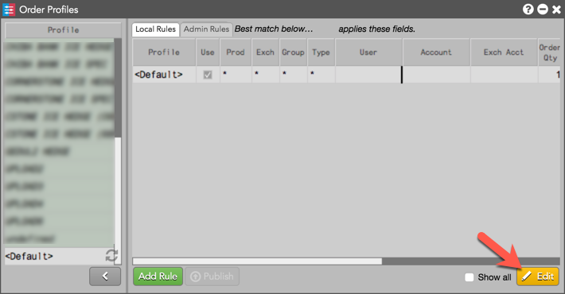
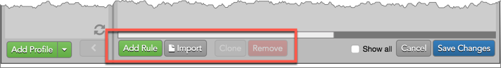
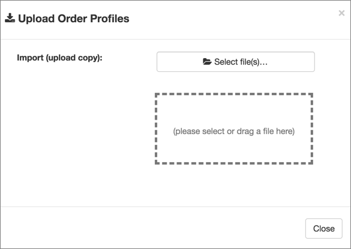
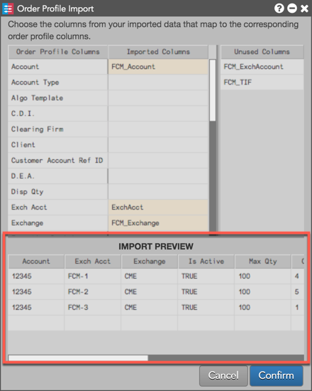
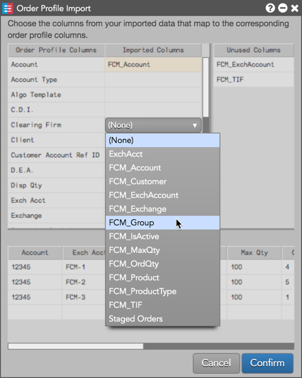
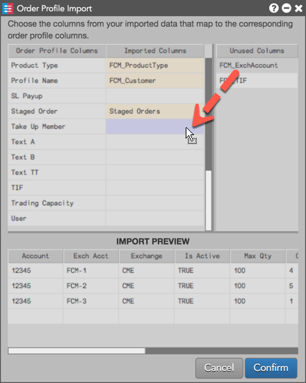
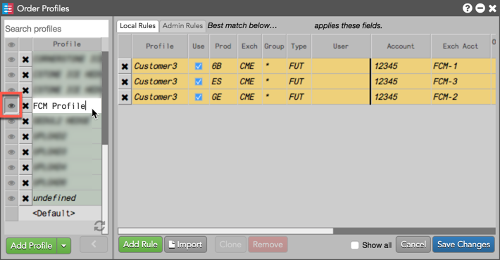
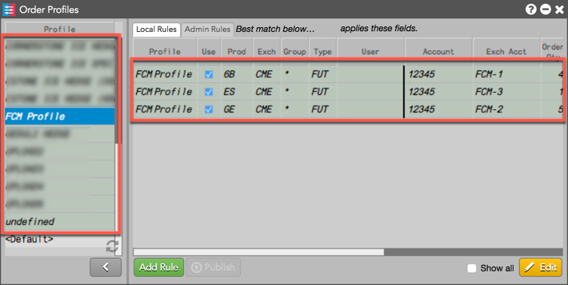
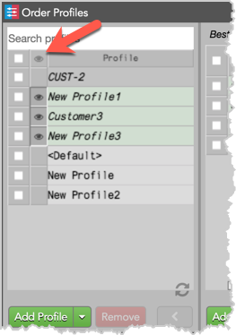

As a company administrator, you can use the Order Profiles widget to upload one or more custom order profiles into the TT platform. Uploaded profiles are environment specific, so you can upload and use different profiles in the Simulation and Live environments. For example, profiles verified in Simulation can then be uploaded to Live.
Note: Before uploading, ensure that the order profiles are in the CSV file format and are properly formatted.
Tip: To upload order profile as rules under existing Setup profiles created by an administrator, the profile names must match exactly, including case sensitivity.
To upload order profiles to TT:

The widget is now in edit mode and additional buttons are displayed.

The Upload Order Profiles dialog appears.


If a column from the .csv file did not map to an Order Profile column, double-click the empty cell in Imported Columns to select one.

Tip: You can also drag-and-drop columns from Unused Columns to Imported Columns.


Tip: To allow specific profiles to be visible to users, you can click the "eyeball" button () for each profile that you want to display in the profile list.
The new profile is broadcast to all users in your company. Published profiles are stored locally on each user's machine and are loaded upon login. If they are currently logged in, users will see the new profiles and rules in their open Order Profiles widgets.
Uploaded profiles and rules are shaded green in Order Profiles.

For more details about viewing uploaded profiles, refer to Viewing uploaded order profiles.
When a file is uploaded, saved, and published by an administrator, consider the following:
To view uploaded order profiles:

All uploaded profiles are displayed.